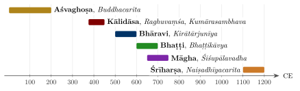

Chapter 2: Sanskrit Poetry from the Veda to the Mahākāvya¶
sargabandho mahākāvyam ucyate tasya lakṣaṇam |
āśīr namaskriyā vastunirdeśo vāpi tanmukham ||
A composition in cantos is called a mahākāvya; its definition is (as follows). It opens with a blessing, a salutation, or an indication of the subject.
— Daṇḍin, Kāvyādarśa 1.14
2.1 Before Kāvya: Vedic and Epic Poetry¶
The Sanskrit theorists did not count the Veda as kāvya. For them it was revelation (śruti), which commands like a master rather than delighting like a beloved (Section 1.3), and for the Mīmāṃsā philosophers it had no human author at all. The epics stood nearer: the Rāmāyaṇa was the “first poem”, the Mahābhārata a work of history and instruction. Yet both bodies of text are poetry by any modern measure, and much of the later literature grew out of them. Their religious content, transmission and history are the subject of Volumes 1 and 2 (Veda Prakāśa and Upaniṣad Dīpikā) and Volume 7 (Itihāsa–Purāṇa) of this series; this section considers them only as poetry.
2.1.1 The Ṛgveda as Poetry¶
The Ṛgveda (c. 1500–1200 BCE) is a collection of 1,028 hymns (sūkta) in ten books (maṇḍala), composed by families of poets over several centuries and preserved by oral recitation of extraordinary exactness. Its poets called themselves kavi and ṛṣi, “seers”, and they spoke of their work as a craft: a hymn is fashioned as a carpenter fashions a chariot, polished and offered to the gods in competition with the hymns of rival poets. Stephanie Jamison and Joel Brereton, whose translation is now standard, stress how self-conscious this art is, with its riddles, its play on the sounds and forms of words, its ring compositions that return at the end to the words of the beginning, and its habit of placing a hidden or paradoxical statement at the centre of a hymn (Jamison and Brereton 2014). Its metres, counted by syllables, are the ancestors of the classical ones: the three-line gāyatrī of eight syllables to the line, and the four-line triṣṭubh and jagatī of eleven and twelve, from which the indravajrā and its relatives later developed.
Most hymns praise and invoke gods such as Agni, Indra and Soma in a dense language of epithet and allusion. Some are poetry of a kind that later readers could recognise at once. The hymns to Dawn (Uṣas) describe the goddess as a young woman uncovering her breast, waking all creatures and ageing the lives of men as she returns each day. A group of dialogue hymns are small dramas: Purūravas pleads with the nymph Urvaśī, who has left him, to return (10.95), a story that Kālidāsa would dramatise (Section 3.6); Yamī urges her twin brother Yama to lie with her and is refused (10.10); the bitch Saramā, messenger of the gods, confronts the Paṇis who have hidden away the cows and scorns their offer to make her their sister (10.108); and the neglected wife Lopāmudrā reproaches the ascetic Agastya (1.179). The gambler’s lament (10.34) is the monologue of a man ruined by the dice, who sees his wife abandoned and his mother grieving and still cannot keep away from the gaming hall. The riddle hymn (1.164) asks questions about the year, speech and the cosmos, and includes its famous reflection on the one reality that the poets call by many names (1.164.46); the hymn of creation (10.129) ends by doubting whether even the highest overseer knows how the world began. There are humorous and secular pieces too, such as the hymn comparing the croaking of frogs at the start of the rains to brahmins chanting at a ritual (7.103), and the hymn to the lady of the forest, Araṇyānī (10.146).
The later Vedic texts carried this art into new forms. The Atharvaveda contains charms for love, healing and the defeat of rivals as well as the long hymn to the Earth (12.1); the Brāhmaṇas tell, in plain and vigorous prose, the stories that explain the rites, among them a prose version of the tale of Purūravas and Urvaśī (Śatapatha Brāhmaṇa 11.5.1); and the early Upaniṣads frame their teaching in dialogues and narratives — the boy Naciketas questioning Death, the sage Yājñavalkya debating at the court of Janaka and instructing his wife Maitreyī — that are among the finest prose of ancient India. The epic śloka itself grew out of the Vedic anuṣṭubh.
2.1.2 The Epics as Poetry¶
The two Sanskrit epics are oral-derived poetry on a vast scale. The Mahābhārata has about 75,000 verses in the Pune critical edition (Section 1.9), in eighteen books; the Rāmāyaṇa of Vālmīki nearly 19,000 in the Baroda edition, in seven books, against a traditional figure of 24,000. Both were composed and expanded over several centuries, broadly between about 400 BCE and 400 CE, and most scholars regard the first and last books of the Rāmāyaṇa as later additions to a five-book core. Both are composed almost entirely in the śloka, with longer metres for some speeches and set pieces, and both use a large stock of repeated formulas — epithets, phrases for beginning and ending speeches, descriptions of battle — of the kind that oral poets everywhere employ. John Brockington’s The Sanskrit Epics is the standard account of their language, metre and growth (Brockington 1998).
The poetic character of the two works differs. The Mahābhārata is a story inside a story: the bard Ugraśravas tells the sages of the Naimiṣa forest how Vaiśampāyana told King Janamejaya the tale that Vyāsa composed, and within this frame characters tell further tales, so that whole poems — the stories of Nala and Damayantī, of Sāvitrī who wins back her husband from Death, of Śakuntalā, and the dialogue of the Bhagavadgītā — are embedded in the narrative. Its greatest poetry is often in speech: Draupadī’s questions in the assembly hall, the arguments of Kṛṣṇa and Yudhiṣṭhira, and the laments of Gāndhārī and the women of the Kurus over the dead on the battlefield in the eleventh book. The Rāmāyaṇa is more unified, and in its descriptive passages it already shows the programme of the later court epic: the city of Ayodhyā, the forest of Daṇḍaka, the rainy season that Rāma and Lakṣmaṇa wait out at Kiṣkindhā while Rāma grieves for Sītā, and Hanumān’s night journey through Laṅkā and the women’s quarters of Rāvaṇa’s palace in the fifth book. Robert Goldman and his collaborators’ translation of the critical edition brings out these qualities (Goldman 1984).
2.1.3 The First Poem¶
The Sanskrit tradition regarded Vālmīki’s Rāmāyaṇa as the “first poem” (ādikāvya) and its author as the “first poet” (ādikavi). The second chapter of the Rāmāyaṇa tells how Vālmīki, walking by the river Tamasā, saw a hunter kill one of a pair of mating krauñca birds, and in his grief and anger uttered a curse that came out, to his own surprise, in a perfectly measured verse:
Rāmāyaṇa 1.2.14 (critical edition)
mā niṣāda pratiṣṭhāṃ tvam agamaḥ śāśvatīḥ samāḥ |
yat krauñcamithunād ekam avadhīḥ kāmamohitam ||
Hunter, may you never find rest for endless years, since you killed one of this pair of krauñcas, lost in love.
Vālmīki calls the new metre śloka because it was born of grief (śoka), and Brahmā then commands him to tell the story of Rāma in it. The legend makes poetry the transformation of grief into ordered speech, and Ānandavardhana drew on it to argue that the dominant rasa of the Rāmāyaṇa is pathos (karuṇa), while that of the Mahābhārata, with its vision of the futility of war, is the tranquil (śānta). The epics became the inexhaustible source of plots for later poets and dramatists in every Indian language.
2.2 The Genre of Mahākāvya¶
The mahākāvya (“great poem”), often called the Sanskrit court epic, is a long narrative poem in cantos (sarga) on an elevated theme, composed in a range of metres and rich in description and figurative language. It was the most prestigious genre of classical Sanskrit poetry and served as the proving ground of poetic ambition for more than a millennium.
Daṇḍin’s Kāvyādarśa (c. 700 CE) gives the classic definition (1.14–19). The poem should open with a blessing, a salutation or a statement of the subject; its story should be drawn from the epics or another true account; its hero should be clever and noble; it should be adorned with descriptions; it should not be too condensed, should be full of rasa and emotion, and should have cantos of moderate length composed in pleasing metres, each canto ending in a different metre. The list of descriptions Daṇḍin expects is given in Table 2.1; in practice no poem contained them all, and Daṇḍin himself allows that a poem lacking some of them is not faulty if the whole is pleasing.
| city (nagara) | ocean (arṇava) | mountain (śaila) |
| seasons (ṛtu) | moonrise and sunrise | sports in gardens |
| sports in water | drinking | festivals of love |
| love in separation (vipralambha) | marriages | birth of a prince |
| counsel (mantra) | embassy (dūta) | the march (prayāṇa) |
| battle (āji) | the triumph of the hero |
2.2.1 The Five Great Poems¶
Later tradition singled out five works as the pañca mahākāvya, the “five great poems”, which were studied in Sanskrit schools with the commentaries of Mallinātha (fourteenth–fifteenth century) and others. They are listed in Table 2.2. Two other early poems, Aśvaghoṣa’s Buddhacarita and Bhaṭṭi’s Rāvaṇavadha, are discussed alongside them.
| Title | Author | Date | Cantos | Subject |
|---|---|---|---|---|
| Raghuvaṃśa | Kālidāsa | c. 5th c. CE | 19 | The kings of Rāma’s solar dynasty |
| Kumārasambhava | Kālidāsa | c. 5th c. CE | 17 (1–8 by Kālidāsa) | Pārvatī’s austerities, her marriage to Śiva, the birth of Kumāra |
| Kirātārjunīya | Bhāravi | 6th c. CE | 18 | Arjuna’s combat with Śiva disguised as a hunter |
| Śiśupālavadha | Māgha | late 7th–8th c. CE | 20 | Kṛṣṇa’s slaying of Śiśupāla |
| Naiṣadhīyacarita | Śrīharṣa | 12th c. CE | 22 | The love and marriage of Nala and Damayantī |
2.3 Aśvaghoṣa: The Earliest Surviving Kāvya Poet¶
Aśvaghoṣa (c. 1st–2nd century CE) is the earliest Sanskrit poet whose mahākāvyas survive. Buddhist tradition associates him with the court of the Kuṣāṇa king Kaniṣka; the colophons of his works describe him as a monk from Sāketa (Ayodhyā) and the son of a woman named Suvarṇākṣī. His poems already show the full apparatus of the genre — cantos in varied metres, descriptions of cities and pleasure gardens, and refined figures of speech — which implies that the form had been developing for some time before him.
2.3.1 Buddhacarita¶
The Buddhacarita (“Acts of the Buddha”) told the life of the Buddha in twenty-eight cantos, from his birth to the distribution of his relics. The Sanskrit text survives only for the first thirteen cantos and part of the fourteenth, taking the story as far as the Awakening; the complete poem is preserved in a Tibetan translation and in a Chinese translation of the early fifth century. The surviving Sanskrit includes celebrated scenes: the young prince’s encounters with old age, sickness and death, the night in the women’s quarters when the sleeping women appear to him as corpses, and his departure from Kapilavastu. E. H. Johnston’s edition and translation remain fundamental; Patrick Olivelle’s translation makes the surviving Sanskrit accessible (Johnston 1936; Olivelle 2008).
2.3.2 Saundarananda¶
The Saundarananda (“Handsome Nanda”) survives complete in eighteen cantos. It tells how the Buddha’s half-brother Nanda, devoted to his wife Sundarī, is led against his will into the monastic life and finally to liberation. The poem’s frank treatment of erotic attachment serves a teaching purpose, and Aśvaghoṣa says so in his closing verses: the poem was written, he explains, to bring peace rather than pleasure, its poetic sweetness being like honey mixed with a bitter medicine to make it palatable.
2.4 Kālidāsa¶
Kālidāsa has been regarded within the Indian tradition as the finest of Sanskrit poets, and modern readers have generally agreed. His surviving works comprise two mahākāvyas (Raghuvaṃśa and Kumārasambhava), the lyric Meghadūta, and three plays (Chapter 3); the Ṛtusaṃhāra, a poem on the six seasons, is traditionally attributed to him, but many scholars doubt the attribution.
2.4.1 Date¶
Nothing certain is known of Kālidāsa’s life. The legend that he was one of the “nine jewels” at the court of a King Vikramāditya of Ujjain who founded the era of 57 BCE has no historical basis. Most scholars place him in the Gupta period, roughly the late fourth to mid fifth century CE, and often connect him with Candragupta II (r. c. 375–415) or Kumāragupta I. Only the latest possible date is fixed: the Aihole inscription of 634 CE, whose poet Ravikīrti claims a fame equal to that of Kālidāsa and Bhāravi, shows that he was famous by then. The earliest possible date is much vaguer. The Mālavikāgnimitra is set at the court of the Śuṅga king Agnimitra, so he cannot be earlier than the second century BCE, and most of the arguments for an exact date within these limits depend on the style and language of his works.
2.4.2 Raghuvaṃśa¶
The Raghuvaṃśa (“The Lineage of Raghu”) narrates the history of the solar dynasty from Dilīpa to the dissolute Agnivarṇa in nineteen cantos. Its opening verse is one of the best known in Sanskrit.
Raghuvaṃśa 1.1
vāgarthāv iva saṃpṛktau vāgarthapratipattaye |
jagataḥ pitarau vande pārvatīparameśvarau ||
For the right understanding of word and meaning, I salute the parents of the world, Pārvatī and Parameśvara, who are joined like word and meaning.
The verse joins a benediction to a statement of poetics: the divine couple are as inseparable as word and sense, the two components of poetry in Bhāmaha’s definition.
The poem’s structure is broadly as follows. Cantos 1–4 tell of Dilīpa’s service of the cow Nandinī to obtain a son, the birth and youth of Raghu, and Raghu’s conquest of the quarters (digvijaya, canto 4). Canto 5 tells of Raghu’s generosity to the student Kautsa and the birth of Aja; canto 6 describes the bride-choice (svayaṃvara) of the princess Indumatī, and canto 7 her marriage to Aja; canto 8 contains Aja’s lament on Indumatī’s sudden death, one of the most admired passages of Sanskrit poetry. Canto 9 describes Daśaratha’s fateful hunt; cantos 10–15 tell the story of Rāma in condensed form; and cantos 16–19 follow his descendants to the dynasty’s decline.
Kālidāsa’s similes became proverbial. In the svayaṃvara scene Indumatī passes along the row of suitors, rejecting each in turn:
Raghuvaṃśa 6.67
sañcāriṇī dīpaśikheva rātrau yaṃ yaṃ vyatīyāya patiṃvarā sā |
narendramārgāṭṭa iva prapede vivarṇabhāvaṃ sa sa bhūmipālaḥ ||
Like a moving lamp-flame at night, whichever king the bride passed by fell into darkness, like a mansion on the royal highway.
The image — each face lit up as she approaches and dimmed as she passes, like buildings along a street as a lamp is carried past — earned the poet the epithet “Dīpaśikhā Kālidāsa”. It illustrates the anonymous verse that sums up the classical estimate of the great poets:
Anonymous subhāṣita
upamā kālidāsasya bhāraver arthagauravam |
daṇḍinaḥ padalālityaṃ māghe santi trayo guṇāḥ ||
Simile is Kālidāsa’s, weight of meaning Bhāravi’s, grace of diction Daṇḍin’s; in Māgha all three qualities are found.
2.4.3 Kumārasambhava¶
The Kumārasambhava (“The Birth of Kumāra”) tells how the gods, oppressed by the demon Tāraka, need a son of Śiva to lead them, and how Pārvatī, daughter of the Himālaya, wins the ascetic god as her husband. Only the first eight cantos are by Kālidāsa; cantos 9–17, which narrate the birth of Kumāra and the defeat of Tāraka, are a later continuation. The poem opens with a description of the Himālaya.
Kumārasambhava 1.1
asty uttarasyāṃ diśi devatātmā himālayo nāma nagādhirājaḥ |
pūrvāparau toyanidhī vigāhya sthitaḥ pṛthivyā iva mānadaṇḍaḥ ||
In the northern quarter is the king of mountains named Himālaya, whose soul is divine; plunging into the eastern and western oceans, he stands like a measuring-rod of the earth.
Its great episodes are the coming of spring and the burning of Kāma, the god of love, by the fire of Śiva’s third eye (canto 3); the lament of Kāma’s wife Rati (canto 4); Pārvatī’s austerities and her encounter with Śiva disguised as a young ascetic who tests her by disparaging the god (canto 5); the wedding (canto 7); and the couple’s love-making (canto 8). The last canto, describing the love of the supreme deities, was criticised by later theorists as a breach of propriety (aucitya); Ānandavardhana discusses the case in the Dhvanyāloka. Hank Heifetz’s translation conveys the poem’s richness (Heifetz 1985).
The poem’s central idea — that the god of asceticism can be won not by the arrows of desire but by Pārvatī’s own austerity, which transforms desire into a deeper union — has attracted many readings. It is also one of the earliest Sanskrit poems to make a woman’s resolve the engine of the plot.
2.4.4 Meghadūta¶
The Meghadūta (“The Cloud Messenger”) is a short poem (about 110–120 verses, depending on the recension) entirely in the slow mandākrāntā metre of seventeen syllables to the line. A yakṣa, a demigod in the service of Kubera, has been exiled for a year to Rāmagiri in central India for neglect of duty. At the onset of the monsoon he asks a passing cloud to carry a message to his wife in the Himālayan city of Alakā.
Meghadūta 1
kaścit kāntāvirahaguruṇā svādhikārapramattaḥ
śāpenāstaṃgamitamahimā varṣabhogyeṇa bhartuḥ |
yakṣaś cakre janakatanayāsnānapuṇyodakeṣu
snigdhacchāyātaruṣu vasatiṃ rāmagiryāśrameṣu ||
A certain yakṣa, negligent of his duty, his greatness brought low by his master’s curse — heavy with separation from his beloved, to be endured for a year — made his dwelling in the hermitages of Rāmagiri, whose waters were made holy by the bathing of Janaka’s daughter and whose trees gave dense shade.
The first part (Pūrvamegha) describes the cloud’s route northward over rivers, mountains and cities — Vidiśā, Ujjayinī and others — in a sequence of vivid vignettes; the second (Uttaramegha) describes Alakā, the yakṣa’s house and grieving wife, and the message itself. Strictly, the Meghadūta is not a mahākāvya but a short poem (khaṇḍakāvya); it founded a whole genre of messenger poems (sandeśakāvya or dūtakāvya), from Dhoyī’s Pavanadūta in Bengal to Vedānta Deśika’s Haṃsasandeśa in the south and vernacular imitations in many languages.
2.5 Bhāravi¶
Bhāravi (sixth century CE) is known only from his Kirātārjunīya and from the Aihole inscription mentioned above. The poem, in eighteen cantos, takes an episode from the Mahābhārata. During the Pāṇḍavas’ exile in the forest, Draupadī and Bhīma urge Yudhiṣṭhira to break the agreement and make war (cantos 1–2); the sage Vyāsa advises that Arjuna should first win divine weapons by austerity (canto 3). The middle cantos follow Arjuna’s journey to the Himālaya, with descriptions of autumn and the mountains and an attempt by celestial nymphs to distract him; in the final cantos Śiva appears in the guise of a mountain hunter (kirāta), quarrels with Arjuna over a boar both have shot, fights him, and, pleased with his valour, grants him the pāśupata weapon.
Bhāravi’s quality is arthagaurava, “weight of meaning”. The political debate of the first two cantos is famous for its maxims. Yudhiṣṭhira, answering Bhīma’s call for immediate war, says:
Kirātārjunīya 2.30
sahasā vidadhīta na kriyām avivekaḥ param āpadāṃ padam |
vṛṇate hi vimṛśyakāriṇaṃ guṇalubdhāḥ svayam eva saṃpadaḥ ||
One should not act rashly; lack of discrimination is the chief seat of misfortunes. Good fortune, eager for merit, chooses of her own accord the man who acts after reflection.
Canto 15, describing the battle, is a showcase of “picture poetry” (citrakāvya): verses that read the same backwards and forwards, verses built on only one or two consonants (including one using only the consonant n), and verses that can be written out in geometric patterns. Indira Peterson’s study shows how such virtuosity serves the poem’s design and argument rather than being mere display (Peterson 2003).
2.6 Māgha¶
Māgha (late seventh or early eighth century) states in a closing passage that his grandfather Suprabhadeva was minister to a king Varmalāta, known from an inscription of 625 CE; this places the poet a generation or two later. His Śiśupālavadha (“The Slaying of Śiśupāla”), in twenty cantos, retells the episode of the Mahābhārata in which Kṛṣṇa kills the insolent king Śiśupāla at Yudhiṣṭhira’s royal consecration. The narrative is slight; the poem’s interest lies in its set pieces, among them the Raivataka mountain described in elaborate verbal patterns (canto 4), the descriptions of the seasons, water-sports and drinking, the dawn (canto 11), and the battle of canto 19, which, like Bhāravi’s canto 15, is full of citrakāvya.
Māgha deliberately set out to surpass Bhāravi, and the tradition credited him with success in a well-known saying: “Bhāravi’s light shines only until Māgha rises” (tāvad bhā bhāraver bhāti yāvan māghasya nodayaḥ).
2.7 Śrīharṣa and the Later Mahākāvya¶
2.7.1 Naiṣadhīyacarita¶
Śrīharṣa (twelfth century), a poet at the court of the Gāhaḍavāla kings of Kanauj, was also the author of the Khaṇḍanakhaṇḍakhādya, a celebrated work of Advaita Vedānta dialectic directed against the Nyāya logicians. His Naiṣadhīyacarita retells in twenty-two cantos the story of Nala and Damayantī, but ends with their marriage and wedding night, before the famous misfortunes begin. The poem is dense with learning, double meanings and allusions to grammar, logic and philosophy — most famously in canto 13, where the goddess Sarasvatī introduces Nala and four gods disguised as Nala in verses each of which can be read as describing any of the five. Its reputation is captured in the saying naiṣadhaṃ vidvadauṣadham, “the Naiṣadha is a tonic for scholars”.
2.7.2 Bhaṭṭi and the “Poem of Learning”¶
Bhaṭṭi (seventh century), who wrote at Valabhī in Gujarat, composed the Rāvaṇavadha, usually called the Bhaṭṭikāvya, in twenty-two cantos. It tells the story of Rāma while systematically illustrating the rules of Pāṇini’s grammar and, in its middle section, the figures of speech. It is the most famous example of the śāstrakāvya, the poem that teaches a discipline.
2.7.3 Other Court Epics¶
Many other mahākāvyas were written in the following centuries, including Kumāradāsa’s Jānakīharaṇa, associated with Sri Lanka; Ratnākara’s enormous Haravijaya (ninth century, Kashmir); and numerous Jain mahākāvyas. A distinctive later development was the “poem of simultaneous narration” (dvisandhāna), in which every verse tells two stories at once through sustained double meaning, as in Kavirāja’s Rāghavapāṇḍavīya, which narrates the Rāmāyaṇa and the Mahābhārata together. Yigal Bronner’s study traces this movement across Sanskrit, Telugu and other languages (Bronner 2010).
2.8 Lyric and Short Poems¶
Beside the court epic stood a rich literature of short poems (khaṇḍakāvya), collections of single stanzas (muktaka), and centuries (śataka). The single stanza, complete in itself, was in many ways the basic unit of Sanskrit poetry; anthologies such as Vidyākara’s Subhāṣitaratnakoṣa (Chapter 8) preserve thousands of them, beautifully translated by Daniel Ingalls (Ingalls 1965). Table 2.3 lists some notable short poems and collections.
| Work | Author | Date | Form and subject |
|---|---|---|---|
| Meghadūta | Kālidāsa | c. 5th c. | Messenger poem in mandākrāntā |
| Ṛtusaṃhāra | attributed to Kālidāsa | uncertain | The six seasons and their effect on lovers |
| Śatakatraya | Bhartṛhari | c. 5th–7th c. | Three centuries on worldly wisdom, love and renunciation (Chapter 8) |
| Amaruśataka | Amaru | c. 7th–8th c. | A century of love stanzas, much cited by theorists |
| Caurapañcāśikā | Bilhaṇa | 11th c. | Fifty stanzas of remembered love, each beginning “even now” (adyāpi) |
| Āryāsaptaśatī | Govardhana | 12th c. | Seven hundred love stanzas in the āryā metre, modelled on Hāla’s Prakrit anthology |
| Gītagovinda | Jayadeva | 12th c. | Songs and verses on the love of Rādhā and Kṛṣṇa |
2.8.1 Jayadeva’s Gītagovinda¶
The Gītagovinda of Jayadeva, a poet associated with the court of Lakṣmaṇasena of Bengal in the late twelfth century, is a unique fusion of court poetry and song. Its twelve cantos alternate narrative and descriptive verses in classical metres with twenty-four songs (prabandhas, popularly called aṣṭapadīs, “eight-steppers”, from their usual eight stanzas), each assigned a rāga and tāla. It tells of Kṛṣṇa’s dalliance with the cowherd women, Rādhā’s jealousy and longing, and the lovers’ reconciliation. The third song begins with a description of spring in Vṛndāvana:
Gītagovinda 1, song 3
lalitalavaṅgalatāpariśīlanakomalamalayasamīre |
madhukaranikarakarambitakokilakūjitakuñjakuṭīre ||
When the soft sandal-mountain breeze caresses the graceful clove-creepers, and the forest bowers resound with cuckoos’ calls mingled with the humming of swarms of bees …
The poem was absorbed into temple worship at Purī, became a central text for the dance traditions of Odisha and Manipur and for later Vaiṣṇava devotion, and inspired a large body of painting, especially in the Rajput and Pahari courts. Barbara Stoler Miller’s edition and translation is standard (Miller 1977).
2.9 Historical Kāvya and Kalhaṇa’s Rājataraṅgiṇī¶
Sanskrit poets frequently wrote about historical rulers. Bāṇa’s prose Harṣacarita (Chapter 4) is the first major example; it was followed by verse biographies such as Padmagupta’s Navasāhasāṅkacarita (c. 1000) on the Paramāra king Sindhurāja, and Bilhaṇa’s Vikramāṅkadevacarita (late eleventh century) on the Cāḷukya king Vikramāditya VI. These works are panegyrics: they celebrate a patron and his lineage within the conventions of the mahākāvya, mixing historical events with mythological framing.
Bilhaṇa’s career illustrates the life of a court poet. Born in Kashmir in the eleventh century, he left home to seek patronage, wandered through Mathurā, Kanauj, Prayāga, Banaras, Gujarat and the Deccan, and finally became chief poet to Vikramāditya VI of Kalyāṇa, whose life he celebrated in eighteen cantos. The last canto of the Vikramāṅkadevacarita is an autobiography of the poet himself, describing his native Kashmir with nostalgic affection, and his travels — a rare personal document in Sanskrit literature.
The Rājataraṅgiṇī (“River of Kings”) of Kalhaṇa is of a different kind. Completed in 1149–50 CE, it is a verse history of the kings of Kashmir from legendary times to the poet’s own day, in eight books (taraṅga, “waves”) and nearly 8,000 verses. Kalhaṇa was the son of Campaka, a minister of King Harṣa of Kashmir (r. 1089–1101), and he wrote without a royal patron. In his introduction he describes his method: he examined eleven earlier chronicles, the Nīlamata Purāṇa, and inscriptions recording the foundation of temples and grants of land. He also states the ideal of impartiality:
Rājataraṅgiṇī 1.7
ślāghyaḥ sa eva guṇavān rāgadveṣabahiṣkṛtā |
bhūtārthakathane yasya stheyasyeva sarasvatī ||
Only that gifted poet is worthy of praise whose word, like that of a judge, stays free of love and hatred in recounting the past.
The early books are largely legendary and their chronology is unreliable; Kalhaṇa assigns impossible reigns of three hundred years and misplaces Aśoka and the Kuṣāṇas. From the seventh-century Kārkoṭa dynasty onwards, however, his account becomes increasingly detailed and, for the eleventh and twelfth centuries, is based on the experience of his own family and contemporaries. Books 7 and 8 give a vivid and often bitter account of court intrigue, rebellions of the landholding ḍāmaras, the confiscation of temple wealth by Harṣa, famine and civil war. Kalhaṇa names the tranquil sentiment (śānta rasa) as the dominant mood of his work: the spectacle of the rise and fall of kings is meant to lead the reader to reflect on the impermanence of power.
The Rājataraṅgiṇī is the closest pre-modern Sanskrit work to history in the modern sense, and it was continued by later Kashmiri authors — Jonarāja and his pupil Śrīvara in the fifteenth century, and Prājyabhaṭṭa and Śuka in the sixteenth — into the period of the Kashmir sultanate and Mughal conquest. M. A. Stein’s annotated translation (1900) remains a monument of scholarship and a foundation for the historical geography of Kashmir (Stein 1900).
2.9.1 Other Historical Poems¶
Kalhaṇa’s work was exceptional, but the poem about a historical patron or event was a regular genre, and its range is wider than the label “panegyric” suggests. Sandhyākaranandin’s Rāmacarita (early twelfth century), written in Bengal under the Pālas, tells two stories at once in every verse through sustained double meaning (compare Section 2.7): that of Rāma, and that of the Pāla king Rāmapāla, who recovered the northern Bengal region of Varendrī after a rebellion led by the Kaivarta chief Divya. Read with the commentary that survives for its first part, it is a principal source for that rebellion. Jayānaka’s Pṛthvīrājavijaya (late twelfth century), by a Kashmiri poet at the Cāhamāna court of Ajmer, celebrates Pṛthvīrāja III; it survives, incomplete, in a single birch-bark manuscript found in Kashmir, with a commentary by Jonarāja. In Gujarat the Jain poets of the Caulukya and Vāghelā courts wrote poems on their patrons, such as Someśvara’s Kīrtikaumudī on the minister Vastupāla (thirteenth century), and developed a distinctive genre of historical anecdote, the prabandha, of which Merutuṅga’s Prabandhacintāmaṇi (1305) is the best known. Later works carried the genre into the courts of the second millennium: Nayacandra Sūri’s Hammīramahākāvya (fifteenth century) on the Cāhamāna king who died defending Ranthambhor against ʿAlāʾ al-Dīn Khaljī (on the siege see Volume 20, Yuddha and Dhanurveda); Gaṅgādevī’s Madhurāvijaya (Section 2.11); Sanskrit poems for sultans, such as Udayarāja’s Rājavinoda on Maḥmūd Begaṛhā of Gujarat; and Kavīndra Paramānanda’s Śivabhārata (seventeenth century) on the Maratha king Śivājī.
European scholars of the nineteenth century often concluded that India had no historical writing. The judgement rested on a narrow idea of history and on neglect of the inscriptions (Section 1.6.1), chronicles, genealogies and Persian histories (Chapter 12) that recorded the past in other forms. Velcheru Narayana Rao, David Shulman and Sanjay Subrahmanyam have argued that writers in South India from the sixteenth century wrote history in forms their readers recognised as factual, signalled by tone and texture rather than by a separate genre (Rao et al. 2001). The historical kāvya belongs to this larger picture: its poets idealised and mythologised their patrons, but they also recorded campaigns, foundations and genealogies in forms their audiences knew how to read.
2.10 Reading Kālidāsa: Two Examples¶
2.10.1 The Cloud’s Journey¶
The first half of the Meghadūta is a journey across India seen from the air. The yakṣa tells the cloud to rise from Rāmagiri and rest on the mountain Āmrakūṭa, then to see the river Revā (Narmadā) spread out at the foot of the Vindhyas like ornamental lines on an elephant’s body. It is to pass over the country of Daśārṇa and its capital Vidiśā on the river Vetravatī, to make a detour to visit Ujjayinī — “do not miss the mansions of Ujjayinī”, he urges — and to attend the evening worship of Śiva Mahākāla, offering its thunder as drum-music. Further north it crosses the Carmaṇvatī, the field of Kurukṣetra, where it is reminded of the war of the Mahābhārata, and the Gaṅgā at Kanakhala, before rising through the Himālaya by the Krauñca pass to Kailāsa and Alakā.
Each place is described through a small scene: peasant women gazing up at the cloud with eyes that know nothing of the coquetry of city women; rivers personified as women longing for their absent lovers; the cloud itself as a lover who drinks from rivers and lingers on mountains. The journey is at once a geography, a series of erotic vignettes, and a slow building up of the longing that the second half will release. The poem’s success lies in this interplay of landscape and feeling — a technique that the Sanskrit theorists would later describe in terms of vibhāvas, the circumstances that excite emotion.
2.10.2 The Lament of Aja¶
In the eighth canto of the Raghuvaṃśa, King Aja and Queen Indumatī are enjoying a garden when a garland falling from the lute of the sage Nārada, passing overhead, strikes the queen, who dies at once. Aja’s long lament over her body — addressed to the dead woman herself, recalling her habits and asking why so soft a thing as a garland could kill, while the poisoned arrows of Death had spared him — moves from disbelief to bitterness to grief. A disciple of the family priest Vasiṣṭha consoles him with a teaching on the impermanence of life: Indumatī was a celestial nymph under a curse, now released. Aja accepts the consolation intellectually but not emotionally; he lives on only until his son Daśaratha is old enough to rule, and then gives up his body at the confluence of the Gaṅgā and the Sarayū.
The episode shows several features of Kālidāsa’s art: the use of a small, almost absurd cause to produce catastrophe; the refusal to let philosophy simply cancel grief; and the way an episode within a dynastic chronicle becomes an independent lyric of loss. Later theorists cited it as a supreme example of the pathetic sentiment (karuṇa rasa).
2.11 Women Poets of Sanskrit¶
Sanskrit literature was overwhelmingly written by men, but it was not entirely so. Rājaśekhara, in the early tenth century, remarked that women too can be poets, since talent belongs to the soul and does not depend on sex; he cited the views of his own wife Avantisundarī on poetics. The anthologies (Chapter 8) preserve verses ascribed to more than thirty women, often known only by name. The most famous is Vijjakā (or Vijjā), who is credited with a verse answering the opening of Daṇḍin’s Kāvyādarśa, where the goddess of speech, Sarasvatī, is called “all white”:
Verse ascribed to Vijjakā in the anthologies
nīlotpaladalaśyāmāṃ vijjakāṃ mām ajānatā |
vṛthaiva daṇḍinā proktaṃ sarvaśuklā sarasvatī ||
Not knowing me, Vijjakā, dark as the petal of a blue lotus, Daṇḍin said in vain that Sarasvatī is all white.
Another, Śīlābhaṭṭārikā, is credited with a stanza that Mammaṭa quotes at the very beginning of his Kāvyaprakāśa as an example of poetry that has no evident figure of speech and is carried by its emotion:
Ascribed to Śīlābhaṭṭārikā; quoted in Kāvyaprakāśa 1
yaḥ kaumāraharaḥ sa eva hi varas tā eva caitrakṣapās
te conmīlitamālatīsurabhayaḥ prauḍhāḥ kadambānilāḥ |
sā caivāsmi tathāpi tatra suratavyāpāralīlāvidhau
revārodhasi vetasītarutale cetaḥ samutkaṇṭhate ||
He who took my maidenhood is my husband still; these are the same nights of spring, the same strong breezes from the kadamba trees, fragrant with opening jasmine; and I am the same woman. Yet my heart longs for the play of love under the reeds on the bank of the Revā.
Married life has not dimmed the speaker’s longing for the secret love of her girlhood — a sentiment that the poem never states but conveys through its catalogue of things unchanged. In later centuries the Vijayanagara princess Gaṅgādevī wrote the Madhurāvijaya (fourteenth century), a mahākāvya on her husband Kampaṇa’s conquest of Madurai; Tirumalāmbā wrote a campū at the court of Acyutarāya (Chapter 4); and Rāmabhadrāmbā wrote a poem on her patron Raghunātha Nāyaka of Tanjavur (on the Nāyaka courts see Section 10.3). Their works are a small fraction of the whole, but they show that the exclusion of women from Sanskrit learning was never complete, especially at royal courts.
2.12 Amaru and the Art of the Single Stanza¶
The Amaruśataka, a “century” of love stanzas ascribed to an otherwise unknown Amaru (perhaps seventh or eighth century), was regarded by the theorists as the model of the self-contained stanza (muktaka). Ānandavardhana remarked that Amaru’s stanzas, overflowing with the erotic sentiment, were well known to be as full as entire compositions, and a later saying claims that one verse of Amaru is worth a hundred long poems. Its verses present moments in the relations of lovers — the quarrel, the reconciliation, the first night, the husband’s departure on a journey — often through the eyes of the heroine or her friend, and frequently through a single gesture or detail. The work exists in several recensions with different contents, and many of its verses were quoted by theorists as examples of suggestion. The collection was attributed in later legend to the philosopher Śaṅkara, who was supposed to have learned the art of love in another man’s body in order to win a debate — an indication of how highly the work was esteemed. Ingalls’s translations from Vidyākara’s anthology include many of its finest stanzas (Ingalls 1965).
2.13 The Conventions of Kāvya¶
Classical Sanskrit poetry rested on a shared stock of conventions, which Rājaśekhara called the “poets’ agreements” (kavisamaya): things that poets describe in a certain way not because they are so in nature but because the tradition has fixed them. The cakora bird drinks moonlight; the cakravāka birds, a pair of ruddy geese, are condemned to spend each night apart on opposite banks of a river and call to each other in sorrow; the aśoka tree blossoms at the touch of a beautiful woman’s foot, and the bakula when she sprinkles it with wine from her mouth; day-lotuses close at night and night-lotuses open at moonrise; fame and laughter are white, infamy and sin black. Mountains have wings that Indra clipped; the ocean is the father of the moon and of the goddess Lakṣmī; Kāma’s bow is made of sugarcane and strung with bees, and his arrows are flowers.
Such conventions allowed poets to compress a great deal of meaning into a single image, since every reader knew what a cakravāka or an aśoka implied. They also defined the “world” of kāvya — a stylised realm of courts, gardens, seasons and lovers, idealised and ordered. The best poets used the conventions with freshness and wit, playing them against one another or giving them unexpected turns; lesser poets reproduced them mechanically, which is why later readers sometimes found classical poetry artificial. Understanding the conventions is the first step to reading the poetry as its original audience did.
The seasons provided a particularly rich field. Each season had its characteristic flowers, birds, winds and pastimes, and its associated moods: spring (vasanta), with the mango blossom, the cuckoo and the southern breeze from the Malaya mountains, was the season of love; the rains (varṣā), with clouds, peacocks and lightning, the season of longing for absent lovers; autumn (śarad), with clear skies, white clouds and lotus ponds, the season for kings to set out on campaign. Kālidāsa’s Meghadūta is built on the conventions of the rains, and the season descriptions of the mahākāvyas draw on this common store.
2.14 The Hymn (Stotra) as Poetry¶
One of the largest bodies of Sanskrit verse is also one of the least studied as literature: the hymn of praise (stotra, stuti). Hymns were composed by poets of every religious community, and many of them use the full resources of kāvya — the long classical metres, figures of speech, double meanings and the conventions of love poetry — in the service of devotion. Because they were recited daily rather than studied in courts, they were among the most widely known Sanskrit poems.
Buddhist hymnody is among the earliest. The hymns of Mātṛceṭa, above all the Śatapañcāśatka (“Hundred and Fifty Verses”), praise the Buddha in simple but polished stanzas; the Chinese pilgrim Yijing, who visited India in the late seventh century, reported that monks everywhere learned them by heart. Jain poets answered with hymns to the tīrthaṅkaras, of which Mānatuṅga’s Bhaktāmarastotra, revered by both Śvetāmbaras and Digambaras, is still recited in Jain homes and temples. At the court of Harṣa, Mayūra’s Sūryaśataka and Bāṇa’s Caṇḍīśataka, each a century of verses in the long sragdharā metre, showed that a hymn could be as ornate as any court poem; the legend that Mayūra was cured of leprosy by his hymn to the Sun is the one Mammaṭa recalls (Chapter 1).
Śaiva and Vaiṣṇava hymns form the bulk of the genre. The Śivamahimnaḥ Stotra attributed to Puṣpadanta became one of the best-known hymns to Śiva; in Kashmir the philosopher Utpaladeva (tenth century) wrote the Śivastotrāvalī, which joins non-dual theology to personal longing, and Jagaddhara Bhaṭṭa (fourteenth century) composed the long Stutikusumāñjali. In the south, the Mukundamālā attributed to the king Kulaśekhara and Yāmuna’s Stotraratna brought the devotional intensity of the Tamil Āḻvārs (Chapter 9) into Sanskrit, and Vedānta Deśika wrote dozens of hymns of great technical brilliance. Many hymns circulate under the name of Śaṅkara, among them the Saundaryalaharī on the Goddess; most scholars doubt that he wrote them, but their popularity is unaffected. Later examples include the Kṛṣṇakarṇāmṛta of Līlāśuka and Nārāyaṇa Bhaṭṭatiri’s Nārāyaṇīyam (Chapter 10).
Hymns were also where Sanskrit poetics met religious feeling most directly. The theorists debated whether devotion to a deity (devaviṣayā rati) could be a full rasa or only a subordinate emotional state (bhāva); the hymn-writers in practice treated it as the highest, and Rūpa Gosvāmin later gave that practice a theory (Chapter 6).
2.15 Sanskrit Poetry in the Second Millennium¶
It was once common to speak of a “decline” of Sanskrit literature after the twelfth century. Recent scholarship, including Pollock’s work on the vernacular millennium, has qualified this picture: Sanskrit lost its monopoly of literary prestige, but a great deal of fine Sanskrit poetry continued to be written, often by poets who also wrote in a regional language (Pollock 2006). The essays collected by Yigal Bronner, David Shulman and Gary Tubb trace the innovations of this later poetry and of the earlier kāvya from which it departed (Bronner et al. 2014).
Jain authors were especially prolific. Hemacandra’s Dvyāśraya illustrates the rules of grammar while narrating the history of the Caulukya dynasty of Gujarat, and a long series of Jain mahākāvyas retold the lives of the tīrthaṅkaras and of Jain kings and merchants. In the south, Vedānta Deśika (thirteenth–fourteenth century), the great Śrīvaiṣṇava theologian, wrote the mahākāvya Yādavābhyudaya and the messenger poem Haṃsasandeśa. Nīlakaṇṭha Dīkṣita (seventeenth century) of Madurai wrote satirical poems such as the Kalividambana (“Mockery of the Kali Age”), lampooning doctors, astrologers and pedants; and the theorist Jagannātha (Section 6.8) wrote at the court of Shāh Jahān the lyric stanzas of the Bhāminīvilāsa. Hymns continued to be composed throughout the period (Section 2.14). Sanskrit literary composition has continued into modern times; the Sanskrit scholar and poet Satya Vrat Shastri received the Jnanpith Award in 2006.
2.16 Metres of the Mahākāvya¶
Classical Sanskrit verse uses two main types of metre: syllabic metres in which each line has a fixed pattern of heavy and light syllables, and the śloka (anuṣṭubh), the four-line stanza of eight-syllable quarters used for narrative from the epics onwards. A canto of a mahākāvya is normally in a single metre, with a change of metre in its closing verse or verses. Table 2.4 lists some common metres.
| Metre | Syllables per quarter | Remarks |
|---|---|---|
| Anuṣṭubh / śloka | 8 | The narrative metre of the epics; used for many cantos of the mahākāvya |
| Indravajrā, Upendravajrā, Upajāti | 11 | Upajāti mixes the first two; very common in Kālidāsa |
| Vaṃśastha | 12 | Frequent in mahākāvya cantos |
| Vasantatilakā | 14 | A favourite metre for single stanzas and drama |
| Mālinī | 15 | Often used for closing verses |
| Mandākrāntā | 17 | Slow and stately; the metre of the Meghadūta |
| Śikhariṇī | 17 | Used for reflective and emotional verses |
| Śārdūlavikrīḍita | 19 | The commonest long metre for single stanzas |
| Sragdharā | 21 | The longest of the common metres |
| Āryā | (measured by morae) | A moraic metre inherited from Prakrit poetry |
2.17 From Sanskrit to the Regional Languages¶
The poets who made the first classics of Kannada, Telugu, Tamil, Malayalam and Hindi knew the mahākāvya well, and many of them built their works on epic themes using its conventions, adapted to new metres and idioms (Table 2.5); these works are discussed in Chapters 7, 10 and 11. Its conventions also travelled across the Bay of Bengal: the Old Javanese kakawin, such as the Rāmāyaṇa Kakawin (ninth century) and Mpu Kaṇwa’s Arjunawiwāha (eleventh century), adopt Sanskrit metres and the descriptive programme of the mahākāvya. Figure 2.1 places the major Sanskrit poets of the genre in time.
| Language | Work | Author and date | Remarks |
|---|---|---|---|
| Kannada | Vikramārjunavijaya | Pampa, 941 CE | Mahābhārata in campū form, identifying Arjuna with the poet’s patron |
| Tamil | Irāmāvatāram | Kampaṉ, c. 12th c. | A free and powerful Tamil recreation of the Rāma story |
| Telugu | Manucaritramu | Allasāni Peddana, 16th c. | The classic Telugu prabandha |
| Malayalam | Adhyātma Rāmāyaṇam Kiḷippāṭṭu | Eḻuttacchaṉ, 16th c. | Devotional Rāma story in the “parrot song” form |
| Avadhi | Rāmcaritmānas | Tulsīdās, 1574–c. 1577 | Devotional Rāma epic in dohā–caupāī verse |

Further Reading¶
-
Jamison and Brereton (2014): the Ṛgveda in translation, with an introduction to its poetics.
-
Brockington (1998) and Goldman (1984): the Sanskrit epics as poetry.
-
Warder (1972–2011) and Bronner et al. (2014): the history of classical kāvya, in detail and in essays on its turning points.
-
Rajan (1989) and Heifetz (1985): translations of Kālidāsa’s poems.
-
Johnston (1936) and Olivelle (2008): Aśvaghoṣa’s Buddhacarita.
-
Peterson (2003): a study of Bhāravi’s poem and of the mahākāvya as a genre.
-
Miller (1977): Jayadeva’s Gītagovinda.
-
Stein (1900): Kalhaṇa’s chronicle with historical commentary.
-
Ingalls (1965) and Bronner (2010): the single stanza and the poetry of double meaning.